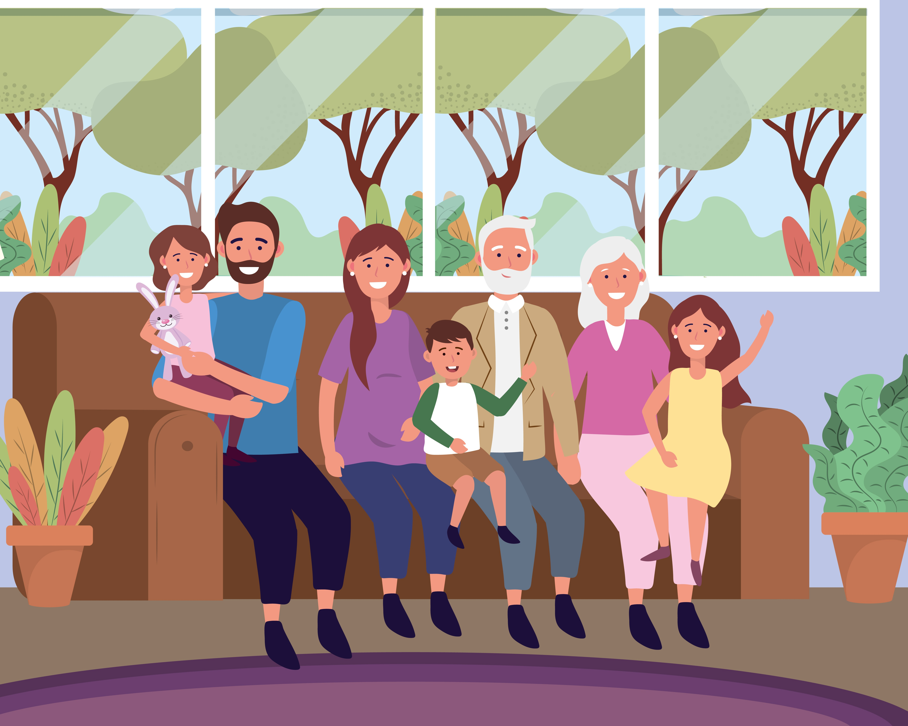
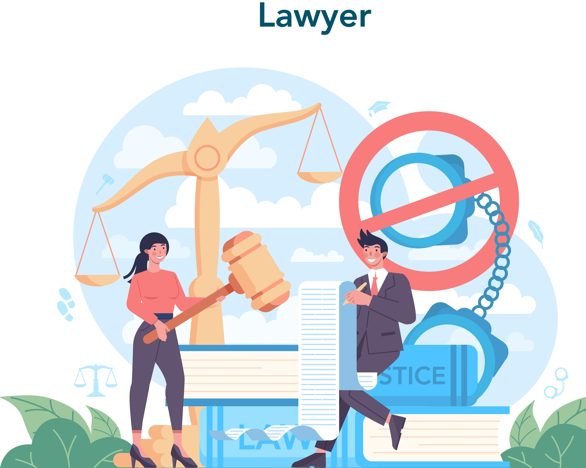

معلومات أكثر

المخاطر النفسية والاجتماعية لاستخدام هذه المواقع

كيف تؤثر المواقع غير الأخلاقية على القيم الجتماعية والأخلاق؟
دور الأسرة في توعية الأبناء وحمايتهم من المحتوى الضار
الآثار القانونية لاستخدام وترويج المحتوى غير الأخلاقية

التكنولوجيا ودورها في الحد من انتشار المواقع غير الأخلاقية